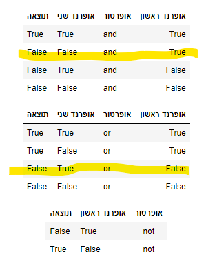

Meyrav
29 במרץ, 2020, 7:09am
שלום ותודה על הקורס ועל כל העזרה
בחוברת 3, בתרגול בדיקת סוגי משתנים, ניסיתי להריץ את כל פקודות type באותה תיבת קוד, אך הפלט היה רק עבור הפקודה הראשונה. מדוע זה כך? האם זה עקבי?
כמו שרואים בתמונה, ה IN ו OUT מופיעים לי בצד ימין ולא שמאל, איך משנים את זה? (לא קריטי אבל סתם קצת מציק)
כיצד מוחקים תיבת קוד?
תודה רבה
2 לייקים
Meyrav
29 במרץ, 2020, 10:03am
מצאתי איך למחוק תיבה: בסרגל משימות Edit > Delete Cell
לייק 1
yair90
29 במרץ, 2020, 10:06am
גם אצלי זה מוצג הפוך. תלחצי ctrl+shift+f ואז במסך שיעלה תכתבי את החיפוש rtl, תלחצי עליו וזה יסדר לך את העמוד
לייק 1
Yam
29 במרץ, 2020, 10:09am
היי,
המחברת אכן מחזירה רק את התוצאה האחרונה של כל תא.
print(type(5/2))
print(type("Hello"))
2 לייקים
Meyrav
29 במרץ, 2020, 11:10am
תודה ים, הגיוני

Yam
29 במרץ, 2020, 11:17am
היי, השורה של ה־and נכונה. בשורה של ה־or אכן נפלה טעות.
Meyrav
29 במרץ, 2020, 12:13pm
אבל False and False יוצא False…
Yam
29 במרץ, 2020, 12:14pm
השורה שסימנת היא True and False
Meyrav
29 במרץ, 2020, 12:18pm
אוי נכון, תודה


{kind=link}
{kind=link}